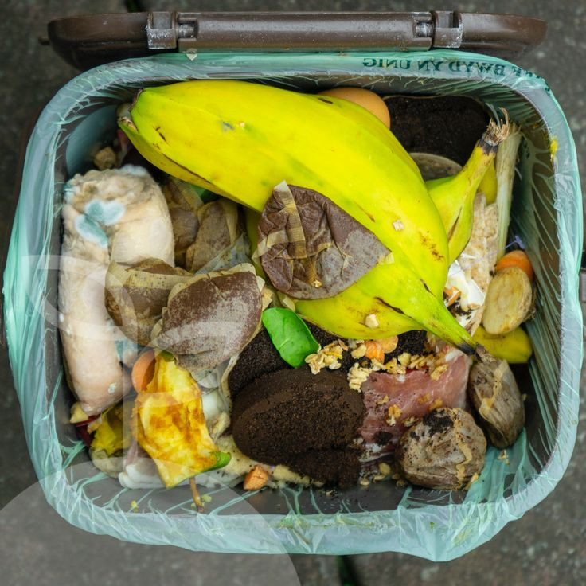

Japón alcanza una tasa de reciclaje de residuos orgánicos del 19.6%, lo cual varía según la región y la capacidad de los municipios para procesar estos residuos mediante compostaje u otras técnicas. Esta práctica se ve reforzada por políticas locales y el compromiso comunitario con el medio ambiente.
